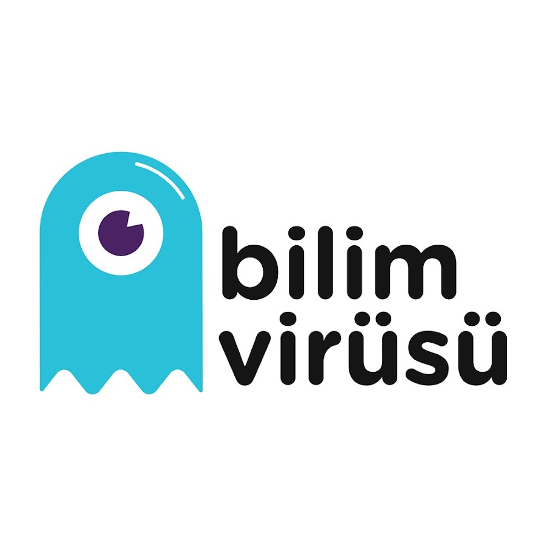

Work Experience
DogGO
Software Development and Test Intern
July 2024 - Present
Hybrid
- Gained experience in backend processes using Scala and Java, contributing to the development and testing of software solutions. Proficient in utilizing tools such as Selenium, Sentry.io , Amplitude, Jira, and Customer.io to enhance software quality and performance.

techcarrer.net
Advanced Fullstack Mastery Bootcamp
June 2024 - August 2024
Remote
- I design and develop the user interface that users interact with, creating page layouts, styles, and interactions using technologies like HTML, CSS, JavaScript, and React.js. I handle the server-side logic and database operations of the application, taking responsibility for functions such as data storage, exchange, and security. Mywork involves using Java and Spring Boot for backend development, as well as databases such as MySQL and MongoDB. I also utilize tools like SonarQube and Docker and coordinate the process from project initiation to completion.

Bilim Virüsü
Bir Sen Bir Gelecek Mentorship Program
June 2024 - Present
Remote

FLO Group
Summer Intern
June 2024 - August 2024
Remote
- We obtained information about all departments within Flo Group. Welearned about the programs and architectures they use and gathered feedbackfrom managers and executives regarding our career prospects.
Projects
TodoZ
- I developed a todo app using Java and Spring Boot for the backend, and I worked with React.js for the front end. The connection between the React front end and the backend was established using Axios, with MySQL as the database. I also utilized Docker to containerize the application. The app features the ability to add, edit, and delete tasks. I am currentlyworking on transforming the app into a platform that can be used by a wider audience.
Real-Time Chat Application
- This project involves developing a real-time chat application using Node.js, Express, and Socket.IO . The server side (server.js) enables clients to connect via WebSocket and exchange messages. The client side (chat.js) provides a web interface for users to send and display messages. HTML (index.html) and CSS (style.css) files define the structure and style of the user interface.
Gender and Age Detection
- I developed a program using OpenCVand Python that performs face, gender, and age prediction. The application utilizes pre-trained Caffe models for age and face recognition, working with a camera to detect a face within a frame and predict the person's gender and age.
Education

Yeditepe University
Software Development
September 2021 - Present
Bachelor's Degree
- I am a third-year Software Development student at Yeditepe University, studying in a curriculum conducted entirely in English. My academic journey has equipped me with a solid foundation in both theoretical knowledge and practical skills essential for software development.